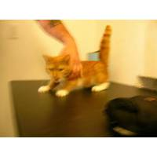
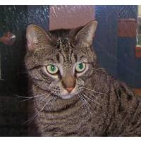
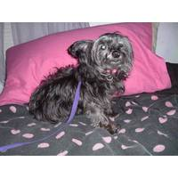
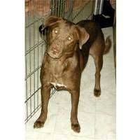

I recently tried to apply logistic regression to distinguish between images of a cat from the images of a dog. While I was unsuccessful in creating a good model, I am noting down the findings for future reference.
In the deep learning course on coursera, in week 2 assignment, we built a logistic regression model to distinguish cat images from non cat images. We trained our model on 209 images, each of which were 64x64. We obtained an accuracy of 99%+ on training set. Our test set consisted of 50 images, each of which were 64x64. We achieved an accuracy of 70% on the test set. Each image was either a cat image, or a non cat image (in which case it could be buildings, or a flower, or bottles, etc)
I wanted to try out logistic regression to some other problem than the assignment problem. I found out this Kaggle Problem. The training set consists of 25000 images each of which is either a cat image or a dog image. The test set consists of 12,500 image which you need to classify as either cat image or dog image. I thought this is a problem very similar to what I have done in the assignment, and should be solvable by logistic regression.
Since the input images were of various sizes, and I do not know how to deal with variable size images, I resized them all to 200x200 size, padding them with white strips if necessary. This is what a few images look like:
   I ran logistic regression model on 500 cat images and 500 dog images. I took rather few images because even in our assignment we had taken only ~200 images. To my surprise, all the weights came close to 1 (larger than 0.9999), and thus all predictions are that the the image is a cat.
Here is the model that I use:
$\hat{y} = \sigma(w^{T}x + b)$
where
$\sigma(z) = \frac{1}{1 + e^{-z}}$
Here $x$ is the feature vector. I use gradient descent to find weights $w$ and $b$. All the components of $w$ turn out to be close to 1.
I need to figure out if I am commiting some error in coding, or is there some inherent limitation of 1 layer neural network here. Any points from readers would be appreciated. I'll upload a docker image if I find time. I have put my code here.